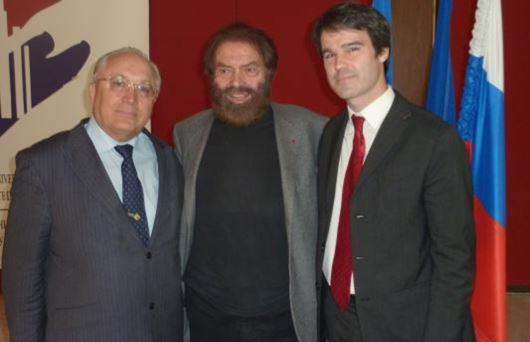
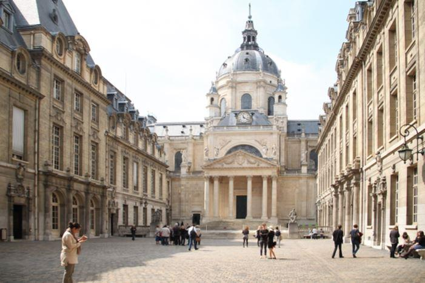
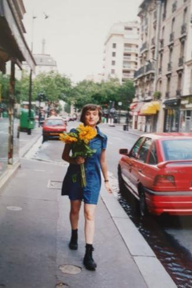
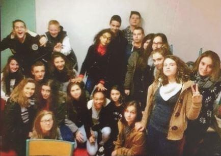
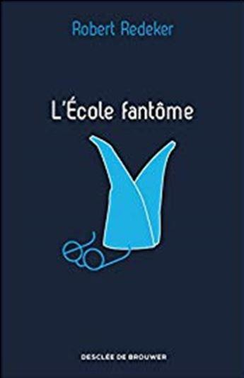
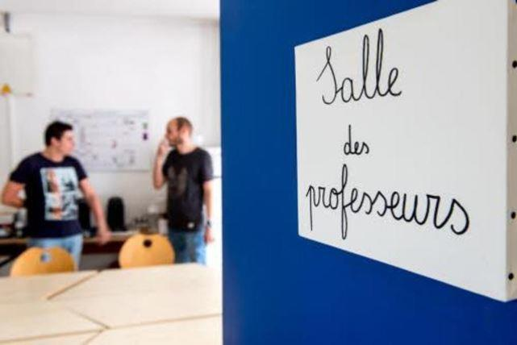
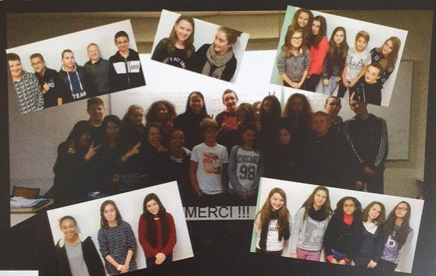

Épreuve de l’étranger… J’emprunte ce titre à un brillant ouvrage d’Antoine Berman sur la théorie de la traduction.
Je n’ai jamais pu m’imaginer d’enseigner un jour la langue française aux Français. Et pourtant cette expérience m’a pris presque dix ans.
J’ai commencé à apprendre le français tardivement, vers l’âge de 17 ans. Mon père me disait depuis toujours qu’une personne civilisée doit parler couramment au moins trois langues étrangères, l’anglais, le français et l’allemand. J’ai commencé à apprendre l’anglais à 4 ans, quand j’ai appris à lire, toute seule. Fille unique, je m’ennuyais un peu. Comme quoi l’ennui peut avoir des côtés positifs. Donc vers 17 ans, élève dans une école avec l’enseignement approfondi de l’anglais, je maîtrisais cette langue suffisamment pour vouloir en apprendre une autre à l’université.
En terminale, j’ai commencé à prendre des cours particuliers avec une professeure titulaire à la faculté des lettres romanes et germaniques de l’Université Lomonossov de Moscou (l’MGU), J’ai passé le concours d’entrée à la faculté de philologie, et j’ai intégré le département de lettres russes. Au concours j’ai passé une épreuve d’anglais, mais une fois admise, j’ai rejoint un groupe « français » prétextant d’avoir étudié cette langue depuis plusieurs années avec un professeur… Mes camarades étudiaient le français depuis dix ans, certains dans des écoles spécialisées. J’étais mal, très mal à l’aise, et très en retard. À la vue de ma première dictée, notre professeure a toussé… puis elle a juste dit que cela n’allait pas m’être facile. Et ça ne l’a jamais été.
Mais je travaillais beaucoup, car je savais que je ne savais rien.
Deux années plus tard, j’ai intégré le Collège universitaire français de Moscou, une université française au sein de l’MGU (Université Lomonossov de Moscou), une structure reconnue en France et en Russie, avec un enseignement en russe et en français. J’ai commencé à suivre des cours en russe, mais assez vite je me suis passée de la traduction simultanée. Ça a été une grande chance d’écouter Paul Ricoeur, Jacques Derrida et Jean Bodrillard en français. Le Collège universitaire engageait des célébrités. Le projet était unique et l’époque aussi, les années 90, notre époque de transition.
Ce collège universitaire a été créé par Monsieur Marek Halter, sur l’idée de l’académicien Sakharov, physicien nucléaire russe, lauréat du prix Nobel de la Paix en 1975, devenu le célèbre dissident. Il a fallu de l’intuition et une énergie colossale pour développer et mettre en place ce projet de l’université franco-russe. Je pense que ce projet a fait bien plus pour le rapprochement de nos deux cultures que les politiques et des échanges officies depuis les décennies. Il a surtout permis de former quelques générations d’intellectuels francophiles attachés à leur pays et à leur culture mais ouverts vers l’Occident.

De gauche à droite: Victor Sadovnitchi, recteur de l'université d'État de Moscou-Lomonossov, Marek Halter, président-fondateur du CUF, Guillaume Garreta, directeur du CUF
Au bout d’un an, j’ai obtenu une bourse d’été pour améliorer mon français. Au bout de deux ans j’ai soutenu le mémoire de lettres modernes sur la notion de l’humanisme et du mythe chez Romain Gary, sous la direction de Pierre Brunel de Paris IV et j’ai obtenu une bourse du gouvernement français pour faire mon DEA de littérature comparée à Paris IV sous la direction du même professeur. La même année j’ai obtenu mon master II de lettres russes à MGU et soutenu mon mémoire sur la tradition de romantisme dans l’œuvre d’Alexandre Chayanov, l’auteur russe des années 30 du XX siècle, plus connu comme économiste agraire que comme écrivain, une figure énigmatique et peu explorée dans le champ littéraire de l’époque, au style riche et éclectique, fortement influencé par le romantisme allemand.
Je suis partie faire mon DEA en France à la Sorbonne. J’ai vécu un an à la cité universitaire, à Paris. Inscrite à la Sorbonne, j’avais l’accès aux conférences et aux séminaires de l’École Normale. J’ai vécu à la française, j’ai eu une vraie vie étudiante, j’ai fait des rencontres, j’ai noué des amitiés. J’ai découvert Paris avec ses Français et ses étrangers. Mon français n’était plus désastreux.
Même s’il était loin de la perfection, je savais voir et apprécier cette perfection chez les autres, toujours avec la volonté de m’améliorer.
J’ai soutenu mon DEA, je suis retournée en Russie où j’ai passé deux années à travailler pour un journal bilingue franco-russe, pilotée par Marek Halter et le Collège Universitaire. Travailler en marge des deux systèmes, russe et français et faire partie d’aucun des deux, a été une expérience singulière. Mais j’ai eu l’envie de retourner vers mes livres et de faire une thèse sur la traductologie, ou plutôt sur la philosophie de traduction plutôt, dont l’ébauche avait été écrite pendant mon année de dea. Le monde secret et confiné de la recherche est fascinant et réconfortant, avec la seule contrainte de rendre les comptes de temps en temps et de produire des écrits qui tiennent la route.
Je suis revenue en 1999 sur l’invitation de l’université de Paris 8, j’avais trouvé le directeur de thèse, j’avais un an d’économies devant moi. Je préparais ma thèse consciencieusement, même si j’étais un peu déçue par « Paris 8 » où j’ai découvert un style d’enseignement et une ambiance complétement différents, avec des flottements, une perte de temps, des conférences de qualité inégale. J’appréciais beaucoup mon directeur de thèse, Monsieur Claude Mouchard, un homme brillant, ouvert d’esprit, passionné de poésie et de traduction, très pris par la recherche. Il me donnait beaucoup de liberté et me faisait confiance. Le cadrage et le dressage n’étaient pas du tout dans ses cordes. Mais je n’avais pas de culture scolaire française, je n’avais pas passé le BAC L en France, je n’avais pas fait de cagne et d’hypocagne. Je manquais cruellement de méthode. Il ne se rendait pas compte à quel point cela était handicapant. J’avais besoin de guidage plus fort et exigeant pour mener mon travail à la maturité.
On ne demande pas aux professeurs d’université d’être pédagogues, ils ont affaire au public averti et apriori motivé. On ne gère pas de la même manière un doctorant et un étudiant en première année de licence, mais il faut quand même une petite lumière, une volonté de transmettre sa passion, de fédérer les gens, une envie d’animer. Aujourd’hui on anime quand il s’agit de gagner de l’argent, on anime une équipe commerciale, on électrise, on motive ; Pourquoi ne fait-on pas la même chose dans le milieu universitaire ?
J’avais l’impression que, à cette université la recherche d’excellence n’était plus au rdv. J’étais surprise par la passivité des étudiants. Les uns et les autres faisaient acte de présence… l’ennui s’installait, j’ai connu les côtés négatifs de la fac où beaucoup finissent par tout laisser tomber pour diverses raisons. Mon français stagnait. Dans mon travail, à l’oral comme à l’écrit, personne ne me corrigeait. Des étrangers, il y en avait plein, partout, et puis à la fac on est censé d’avoir le niveau… non ?
Actuellement il n’existe pas de politique unique des universités en matière des exigences de la maîtrise du français. Certains établissements affichent leurs conditions d’admission, d’autres disent juste qu’il faut avoir le niveau minimum pour suivre. Mais lequel ? B2 ? C1 ? Pour quelle spécialité ? Ce flou est dérangeant, mais logique. Pourquoi exiger le niveau à l’université quand on peut suivre toute sa scolarité de l’école primaire jusqu’au lycée, sans réellement maîtriser le français. Je parle en connaissance de cause car je travaille aujourd’hui avec des collégiens d’origine étrangère. Souvent, ils sont complétement perdus, mais leurs lacunes ne les empêchent pas de passer les classes. Et cela ne dérange personne.
J’ai terminé ma thèse intitulée « Ossip Mandelstam, Paul Celan, Philippe Jaccottet, trois poètes traducteurs, leurs positions historiques et leurs interférences ».
Quand j’ai présenté ma thèse pour la première fois j’ai été recalée par le président du jury, pour manque de structure et pour les fautes de langue. C’était une bonne chose, une prise de conscience. Mon directeur de thèse ne semblait jamais ni gêné ni préoccupé par ces défauts. Pourquoi ne pas donner des ouvrages de référence à un doctorant en début de son parcours ? j’aurais pu très bien suivre des cours de langue pour des étudiants du 3ème cycle, et cela m’aurait fait le plus grand bien ! On vous laisse tomber du moment où vous vous exprimez avec fluidité, où vous avez du vocabulaire et n’avez de problèmes de communication et de compréhension.
La bienveillance et la tolérance aussi bien que l’indifférence peuvent nous jouer des mauvais tours quand elles ne nous font plus avancer, l’état actuel de nos écoles le prouve. Mon directeur de thèse, jamais il ne m’a fait reprendre mon plan, jamais il n’a exigé que je corrige mes erreurs. Il a été d’accord que je présente mon ouvrage dans l’état.
J’ai donc passé une année dans le tourment à tout reprendre toute seule, à faire des lectures complémentaires, à lire des ouvrages sur la méthodologie, à conceptualiser. Mais le plus difficile, c’était la langue. Les proches me disaient « c’est intéressant, mais ce n’est pas du français, c’est un français bizarre … » Rassurant, mais il fallait avancer malgré tout. Personne ne va jamais corriger 500 pages par pure sympathie.
J’ai fini par engager un correcteur. C’était un professeur de français de collège. Il semblait assez perplexe et sceptique lors de notre première séance de travail, il a dû me prendre pour une petite bourgeoise qui cherchait à s’occuper. Je lisais toutes ses corrections, jamais je n’ai fait de copier/coller, je lui posais des questions, je cherchais à comprendre mes erreurs et à connaitre la règle. Et je lisais les manuels de grammaire. Cette personne, en travaillant pour moi pendant trois mois, avec beaucoup de réserve et de pugnacité, m’a beaucoup apporté, la conscience de la langue avant tout. On ne peut pas transmettre sa pensée en langue boiteuse et imparfaite. La forme et le fond sont indissociables, quel que soit la langue que l’on parle.
Le président du Jury m’a admis à la soutenance. Il a reconnu les améliorations, il a apprécié l’originalité des concepts et reconnu l’ampleur du travail entrepris.
Aujourd’hui, avec du recul, je peux affirmer que j’avais les capacités et la volonté de mieux conceptualiser mon ouvrage, de réorienter ma réflexion, de sacrifier le superflu pour approfondir l’essentiel.
J’ai soutenu ma thèse avec succès. La soutenance a duré cinq heures. Je notais toutes les questions et toutes les remarques, j’ai paré tous les coups, j’ai défendu ma pensée et mes convictions. Et je pense qu’ils ont compris la même chose que je comprends aujourd’hui et ils se sont sentis mal à l’aise. Malgré tout, je les ai convaincus et surpris. J’ai eu « très honorable avec félicitations du jury ».
Et je m’en suis sortie apaisée mais non satisfaite. Finalement, mon travail a été bien accueilli, mon directeur m’a bien défendue. Mais l’expérience a été assez traumatisante, humainement et intellectuellement. Peut-être je suis perfectionniste, mais en fait, je ne le pense pas.
On ne peut pas faire grande chose d’une thèse si on n’intègre pas le CNRS, si on ne souhaite pas enseigner à l’université, si on ne souhaite pas enseigner tout court…. Il n’est pas conseillé de l’inscrire dans la rubrique « formations » de son CV pour ne pas devenir une bête de foire, conviée aux entretiens foireux par des recruteurs malhonnêtes par pure curiosité.
Sans thèse, et même sans DEA, le CV est plus aéré et permet de décrocher un boulot alimentaire sans trop de soucis, il suffit d’avoir un argumentaire qui tient la route et savoir mentir franchement. On peut devenir commerciale en publicité, animatrice des ventes ou même conseillère en gestion de patrimoine.
Intégrer l’éducation Nationale en qualité de vacataire, puis contractuelle fut un défi en quelque sorte suicidaire. Mon français s’est amélioré depuis, mais je n’étais pas sûre de moi. De plus, je n’avais aucune connaissance du système scolaire français, des méthodes de l’enseignement et de la pédagogie tout court. J’avais pour seule bagage mon expérience d’élève et d’étudiante, ma culture littéraire et linguistique et mes intuitions. Le recrutement du personnel contractuel se fait sur des critères formels.
Vous avez postulé, vous avez le niveau puisque vos diplômes l’attestent, donc vous allez faire le travail. Ceux qui se débrouillent, restent et peuvent évoluer. Il était temps de se mettre au français sérieusement. J’écoutais les collègues, avares de conseils et pas toujours bienveillants, j’écoutais les élèves mêmes si leur critique ne me faisait pas plaisir, je me formais, me corrigeais, me torturais tous les jours. J’ai passé des stages de formation en gestion de classe, en gestion des situations conflictuelles, en enseignement du français par le théâtre…. des contractuels et des professeurs expérimentés se retrouvaient ensemble. C’était intéressant et intense. J’ai aussi beaucoup lu : j’avais récupéré les listes des ouvrages conseillés par les ESPE anciennement UFM longtemps avant de passer le concours. Je ne voulais pas le passer d’ailleurs, parce que je voulais garder ma liberté, rester en périphérie du système, juste bien faire mon travail et être payé.
J’enchainais des remplacements, en faisant en moyenne deux établissements par année scolaire. Mon expérience la plus insolite était ma mission au collège rural à 60 km de chez moi. On m’a engagé pour le remplacement en lettres modernes à temps plein, mais quand j’ai pris le poste, la direction m’a annoncé que je devais faire 12 heures de français et 6 heures de latin et en plus prendre une classe de 5ème comme professeure principale. Pourquoi le latin ? Parce que la collègue que je remplaçais le faisait. Sans être professeur de lettres classiques, elle avait accepté de le faire. « Vous, savez, le latin au collège, ce n’est pas grande chose…. », me rassurait le directeur. Ma collègue de lettre classiques était censée m’aider, mais nous avions les emplois de temps incompatibles.
J’avais fait un peu de latin et un peu de grec à l’université de Moscou. Donc je me suis mis au travail….
Avec les années ma bataille avec la langue s’est transformée en résistance au système. Je ne l’ai compris qu’avec du recul. Quand j’étais « dedans », je travaillais dans l’urgence. Finalement, pour continuer ce métier, je me suis inscrite au concours... L’inspecteur qui me suivait depuis quelques années m’a dit « C’est quand -même extraordinaire, comment vous avez réussi à maîtriser le français. Je ne m’imagine pas une seconde d’enseigner le russe aux petits russes…. Le CAPEs, vous l’aurez, et probablement l’agrégation. Mais vous ne serez jamais bien dans ce métier, je vous le garantis. »
Évidemment j’ai très mal pris ses propos. Cela ne m’a pas empêché pour autant de passer et de réussir mon concours interne, la même année, avec un très bon classement. Et pourtant cet inspecteur avait parfaitement raison.
Il m’a fallu une année de formation à l’ESPE pour le comprendre.
La langue de bois en cours de didactique, la théorie de simplification universelle en cours de pédagogie, l’enseignement par le TICE soporifique et l’anglais obligatoire et poussif. J’étais la plus vieille, car les inspecteurs, soucieux de mon perfectionnement, m’ont mis avec des jeunes stagiaires et non avec des stagiaires expérimentés. J’étais la seule à avoir fait des études de la linguistique et non seulement de lettres, la seule à avoir soutenu une thèse, la seule « étrangère » et nous étions deux dans le groupe à parler anglais. Contrairement à mes camarades, j’avais 7 années d’expérience du terrain. La langue de bois et la technicité uniforme de l’approche m’exaspéraient. Plus on me donnait de cette science, moins bien je me sentais dans cette institution dont désormais je faisais partie.
Sur le terrain j’ai été suivie par une collègue qui avait été désignée tutrice par le principal à la dernière minute. Elle n’avait rien demandé à personne, elle n’avait jamais été formée pour, comme aucun tuteur pour des enseignants de second degré d’ailleurs. Une formation spécifique existe uniquement pour le premier degré. Les tuteurs des enseignants de second degré suivent des stages pour connaître la procédure de titularisation et des obligations des tuteurs. On leur parle de l’administratif sans plus. Certains sont naturellement capables de suivre un jeune collègue sur le terrain et s’épanouissent dans cette tâche. Mais pas tous.
« On peut comprendre le texte sans savoir ce qui est le subjonctif….On peut faire du latin en parlant principalement de la civilisation et en faisant des recherches sur l’ordinateur au cdi … On laisse les élèves s’exprimer, il faut qu’ils soient actifs, qu’ils communiquent. Oui, mais comment ? La langue est un outil, un instrument, on simplifie, on rabote on passe sous silence des aspects difficiles qui résistent aux élèves, par ce que les élèves n’ont plus l’habitude de surmonter les difficultés, ils se rebellent contre les difficultés, par tous les moyens. Et ces moyens sont efficaces, car l’élève est au centre du système, il est acteur de son apprentissage. Et l’enseignant est son animateur, attentif, bienveillant et dépourvue de moyens de pression. A l’école d’aujourd’hui l’élève a des droits, sa famille a des droits et le pouvoir et l’enseignant a des obligations vis-à-vis de l’élève, de la famille, de la hiérarchie et de l’institution. La pérennité de l’emploi s’avère couteuse et lourde à porter. Il faut suivre les réformes, appliquer les règles, répondre aux ordres, construire les progressions, être sympa avec des élèves, faire le programme, être loyal au système. Le fait d’aller contre sa nature et de faire des choses contraires à ses convictions peut nous plonger dans l’angoisse et dans le tourment.
Je n’ai jamais été sereine, je n’ai jamais été satisfaite par ce que je faisais. Ce qu’on me faisait faire était contraire de ma vision de l’enseignement de langue et de lettres et aussi contraire de ma vision de la mission de professeur. J’étais en désaccord permanent avec moi-même J’ai découvert l’écho de mes pensées récemment, dans le livre de Robert Redeker « L’École Fantôme » et dans « Désinstruction nationale » de René Chiche, ces deux remarquables ouvrages des professeurs en activité qui parlent avec lucidité et honnêteté de l’état actuel de l’école. De l’état que j’ai connu et que j’ai vu s’aggraver pendant mes presque dix années d’activité. Mais ma décision avait été prise bien avant ces bénéfiques lectures
J’ai pu constater qu’on n’apprend plus la grammaire : à la fin du collège l’élève ne connaît pas tous les temps et tous les modes, peu connaissent la différence entre un temps et un mode verbal, la forme passive pose problème, la concordance des temps aussi, l’analyse de la situation d’énonciation pose problème, la différence entre les notions de cause de conséquence pose problème.
Quand on récupère des élèves de troisième avec de telles lacunes, difficile de parler de la préparation du Brevet, IL faut tout reprendre, mais il est trop tard, il faut aussi faire le programme de 3ème
L’utilisation du dictionnaire pose problème, la recherche des informations en dehors de Wikipedia pose problème.
On ne travaille pas assez sur le vocabulaire, sur les registres de la langue. Le vocabulaire des jeunes est très restreint par manque cruel de lecture et donc de culture.
On ne fait presque plus rien apprendre par cœur, ni conjugaisons, ni tables de multiplication, ni poèmes. Dire le poème devant la classe est un supplice et une nouvelle source de traumatisme
On ne sait plus faire une dictée, une autre source de traumatisme. Faire une dictée en classe entière est souvent impossible, car les enfants ne savent pas écouter. Respecter le temps de parole de l’autre pose problème, le silence fait peur. On vit à l’époque des bruits et du visuel.
On écrit très peu et on corrige de moins en moins. Les corrections ne sont même pas lues par les élèves, car il faut faire un effort, demander des éclaircissements éventuellement.
Et on supprime les notes, traumatisantes, en les remplaçant par des points de couleur, nettement plus sympas.
On enfume les jeunes en les laissant croire que la compétition, c’est pour plus tard, pour l’instant l’enfant doit être heureux et croire en l’égalité des chances. Et ce long instant dure 15 ans.
On vit dans l’illusion d’un apprentissage plaisir, d’un apprentissage ludique tandis que depuis des siècles c’était une contrainte, bénéfique et nécessaire.
Ma formation à l’école professorale (l’ESPE) m’a écœurée de l’institution. L’ambiance en salle des profs y a largement contribué. Manque de solidarité, de courage et d’envie, chez les collègues, chez les tuteurs, une attitude fuyante et lâche, des conseils souvent aussi inconsistants qu’irresponsables. Avant l’inspection les tuteurs perdent les moyens sinon comment expliquer l’absence de réactivité et de soutien à ce moment crucial ?
Pourquoi personne n’a manifesté pendant que la réforme du lycée se discutait et se mettait en place Et dans les groupes des profs sur FB les discussions tournent principalement autour des salaires et de la retraite (cela se comprend, personne ne veut voir baisser son niveau de vie). Mais la réforme du lycée est belle est bien digérée
On vide la matière, la littérature et la langue, de leur contenu, on nous apprend des techniques d’enseignement et on veille qu’ils soient appliqués à la lettre. Il est important de connaître « des gestes », la pédagogie et la didactique… de savoir simplifier. Mais avant de simplifier, il faut savoir. Mais on constate qu’aujourd’hui en France on peut enseigner sans avoir des connaissances disciplinaires solides. Une candidate au CAPES, une contractuelle expérimentée rageait quand on lui avait demandé ce qui était un paradigme. Pourquoi connaître des termes barbares qui ne servent à rien pour enseigner le français aux enfants ? Elle est titularisée aujourd’hui. Elle s’y plaît bien dans le métier. Tant mieux. On peut passer le CAPES de lettres avec la formation initiale en une autre matière, sans jamais étudier l’histoire de la langue, l’histoire de la littérature, sans avoir des connaissances en linguistique. Sans même jamais lire en original les textes qu’on fait étudier. À quoi bon, quand il suffit d’avoir une bonne « méthode » et un bon feeling avec des élèves.
J’étais frustrée de ne pas pouvoir passer aux élèves ce que j’ai appris et ce qu’on m’a appris, de partager avec eux des textes et des mots qui peuvent changer la vie… J’ai ressenti une pression, comme si on me forçait de priver les élèves de savoir, de réduire leur horizon littéraire aux dimensions d’une anthologie ou, pire, d’une adaptation ! Réduire la lecture au décryptage des notions.
C’est normal, que la dissertation disparaisse progressivement. Peu d’élèves ont le niveau pour la faire. Cet exercice nécessite une certaine culture littéraire, une vision des œuvres dans l’ensemble et une bonne capacité de structurer son raisonnement. On ne peut pas accéder à cette vision par une étude des corpus.
J’ai lu Dumas à dix ans, Molière, Voltaire et Balzac à douze ans, en traduction. Sans parler des classiques russes. J’étais portée par les classiques. Et voir que ces grands classiques, même étant inscrits au programme, ne sont plus accessibles aux enfants français, me plonge dans une profonde tristesse. C’est du vol. C’est une grande tromperie et je ne souhaite pas y participer.
Je me suis retirée parce que, comme dit Robert Redeker dans son « L’Ecole fantôme » le professeur, tel que l’institution le souhaite, doit être « un animateur vaguement éclairé dans la discipline qu’il enseigne doublé d’un généraliste de la communication psychosociale », parce que « socioâterie et puérolâterie guident les projets destinés à mettre l’intellectualité des professeurs au pas du conformisme social ». Précisément pour cette raison.
Mon épreuve de l’étranger s’est déroulée au sein de l’Éducation Nationale. L’épreuve de l’étranger, ou bien de l’étrange, de l’étrange, mettant mal à l’aise, de l’inquiétante étrangeté, das Unheimliche, selon Freud. C’est une épreuve initiatique quand tu plonges dans l’univers étrange et étranger et tu te sens étranger à ce que tu fais. Pour ne pas devenir étranger à toi -même tu dois entreprendre quelque chose, faire un grand saut dans le vide, malgré le vertige. C’est le vertige de la liberté. Quand ce vertige est vaincu, la peur s’en va, et on prend le large.
Le rôle du maître est de transmettre le savoir, ou plutôt, les clés du savoir, d’ouvrir l’horizon, d’encourager l’élève d’aller plus loin, de le faire grandir, de le rendre curieux, enthousiaste et ouvert d’esprit. Avec le français, je reste et je resterai toujours une élève, mais une élève qui sait et qui aime transmettre le peu de ce qu’elle avait appris, de ce qu’on lui avait appris. Et quand je vois aujourd’hui mes élèves, enfants et adultes, progresser, prendre de l’assurance et avancer, je suis contente et rassurée.
L’épreuve de l’étranger continue et ça vaut la peine.
Partager cette page